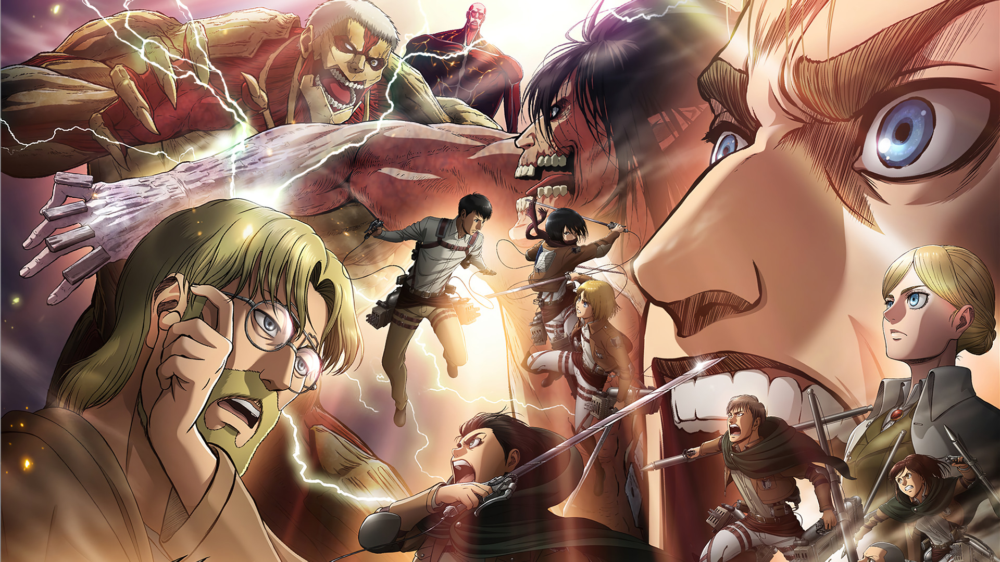
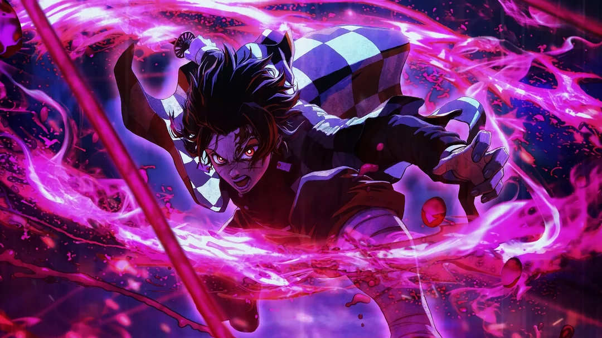

Welkom op Onigiri!
Een website met een aantal van Volkan Kocak's favoriete anime.
Welke anime?
Ik heb een hoop favoriete anime maar, op deze site zal ik het hebben over 3 anime die erg populair zijn. Natuurlijk kan ik het gaan hebben over meerdere anime, maar dan zijn we langer bezig. De lijst gaat als volgt:
De anime
- Attack On Titan
- Jujutsu Kaisen
- Demon Slayer
Attack on Titan is een populaire anime gebaseerd op Hajime Isayama's manga. Het verhaal draait om Eren Yeager en vrienden die de mensheid verdedigen tegen reusachtige Titans. Het wordt geprezen voor zijn onvoorspelbare plot en diepe personageontwikkeling. Waarom ik dit zo leuk vind komt door de meeslepende verhaallijn, de intense actie en de voortdurende onthullingen die de kijkervaring boeiend maken.
Jujutsu Kaisen is een populaire anime gebaseerd op Gege Akutami's manga. De serie volgt Yuji Itadori, een middelbare scholier met bovennatuurlijke krachten, die betrokken raakt bij een wereld van vloekbestrijding en vecht tegen vijandige wezens. Wat ik geweldig vind aan aan deze anime is de perfecte mix van actie, humor, en de verkenning van angst en moed. Het levert niet alleen leuke gevechten, maar biedt ook rijke karakterontwikkeling en thema's die meelopen met het publiek.
Demon Slayer is een bekroonde anime gebaseerd op Koyoharu Gotouge's manga. Het verhaal volgt Tanjiro Kamado, een jongen die zijn familie verliest aan demonen en strijdt om zijn zus Nezuko te redden, die ook in een demon is veranderd. De serie wordt geprezen om zijn animatie, indrukwekkende gevechten en emotionele momenten. Wat de anime voor mij speciaal maakt, is de prachtige visuele animatie en de diepe thema's van doorzettingsvermogen, vriendschap en hoop die in het verhaal voorkomen.
